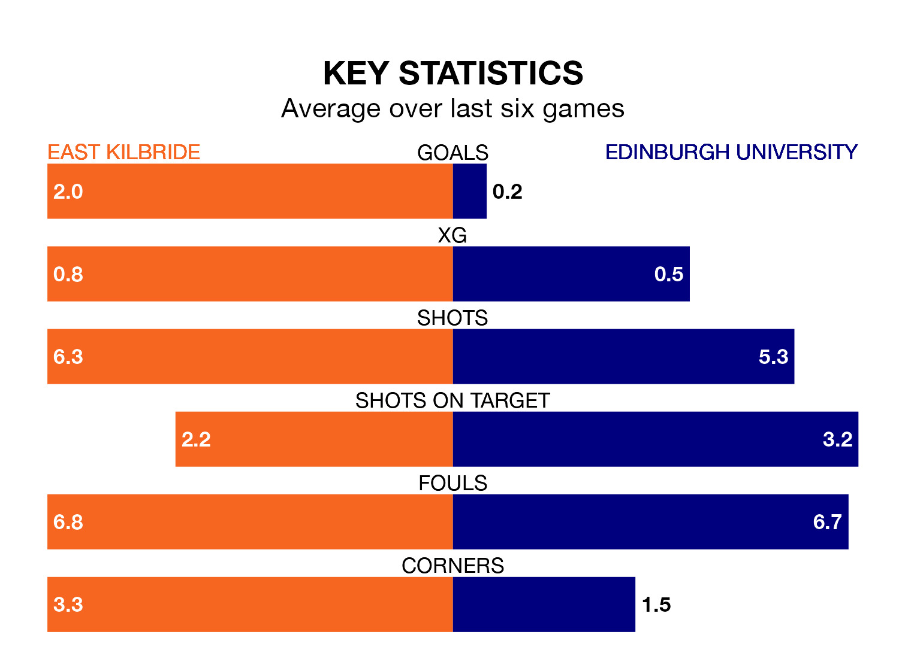

Relegation candidates Edinburgh University face a challenge away against high-flying East Kilbride at K Park Training Academy on Saturday.
Edinburgh University are rooted to the bottom of the Lowland Football League table, and have picked up just one win and one draw in their 25 games to date.
The Kilby, meanwhile, are top of the standings with 63 points, having won 20 and drawn three.
East Kilbride are in good form in the Lowland Football League, with four wins and a draw from their last six games.
With no wins and six losses over that period, Edinburgh University's form is much worse – they have taken no points from 18, compared to the Kilby's 13.
With 72 goals in 25 games so far this season, the hosts are the league's highest scorers with 2.9 goals per game. And they are conceding fewer than average, letting in 30 goals at a rate of 1.2 per game.
The away side, meanwhile, are below average scorers, with 0.5 goals per game, compared to a league average of 1.7. They have conceded 4.1 goals per game.
In the last 10 years, East Kilbride and Edinburgh University have played each other on 16 occasions. East Kilbride won 10 of them, Edinburgh University three, and they drew three times.
On average, the Kilby scored 3.9 goals and Edinburgh University 0.9 in those matches.
Their last meeting was on September 2, when East Kilbride won 9-0 away.
East Kilbride's last match was on Tuesday, a 3-2 win against Tranent Juniors.
Edinburgh University lost 4-0 against Linlithgow Rose last time out, on February 10.
Updated: 12:06 (UTC), 15/02/24